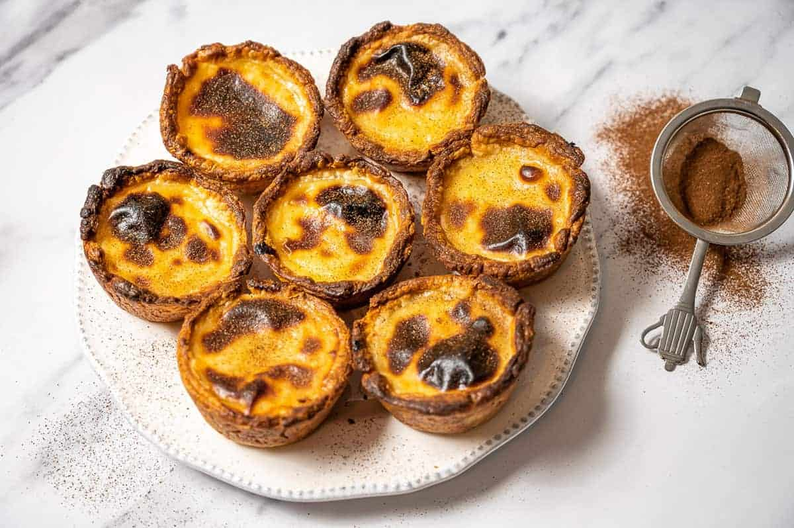

PASTEIS DE NATA

INGREDIENTS
- 1 sheet of puff pastry, thawed if frozen
- 2/3 cup granulated sugar
- 1/4 cup cornstarch
- 2 cups whole milk
- 6 egg yolks
- 1 teaspoon vanilla extract
- Powdered sugar and cinnamon,
for dusting (optional)
INSTRUCTIONS
- Preheat the oven to 550°F (290°C) with a rack in the top third of the oven.
- Roll out a sheet of puff pastry to a thickness of about 1/16 inch (2mm).
- Cut the pastry into 12 circles that will fit into a muffin tin.
- Place each circle into the muffin tin, pressing the pastry into the bottom and up the sides of each cup.
- In a large bowl, whisk together 2/3 cup of granulated sugar and 1/4 cup of cornstarch.
- In a small saucepan, heat 2 cups of whole milk over medium heat until it comes to a boil.
- Remove the milk from the heat and slowly pour it into the bowl with the sugar and cornstarch mixture, whisking constantly.
- Return the mixture to the saucepan and cook over medium heat, whisking constantly, until it thickens and comes to a boil, about 2-3 minutes.
- Remove the pan from the heat and whisk in 6 egg yolks and 1 teaspoon of vanilla extract until well combined.
- Divide the custard evenly among the pastry cups, filling each one about 2/3 full.
- Bake the pastéis de nata in the preheated oven until the pastry is crisp and the custard is
lightly browned and set, about 8-10 minutes.
- Remove the pastéis de nata from the oven and let them cool in the muffin tin for 5 minutes.
- Remove the pastéis de nata from the muffin tin and let them cool completely on a wire rack.
- Before serving, dust the pastéis de nata with powdered sugar and cinnamon if desired.